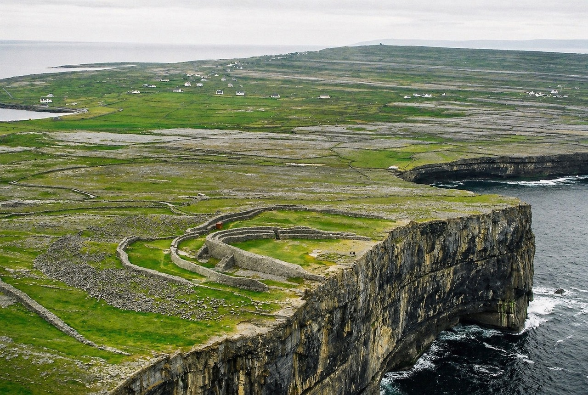

The old McDonagh warehouses still dominated Galway harbour then, along with the fuel tanks lining the quays. What stirred them, on that morning thirty years ago, between the crystalline light slicing through the Atlantic mist and the grey of the stone walls? The iron serpents of the cranes, the coal sheds, the battered fishing boats seemed only an extension of the nightmare of the previous evening, when they had landed in that fallback hotel in town. And yet, amid all the ugliness around them, there breathed an undeniable air of vitality.
The desire to get rid of the rental car and leave sprang from the contrast itself: the industrial greyness of the dock against the deep blue of the bay pointing toward the islands. More than the islands—a thin dark line barely distinguishable from the water—they saw the ferry ready to cast off. Its white-and-blue bulk, loaded with crates and people, was the real spark behind their spur-of-the-moment decision. Inis Mór, she read on the timetable board. At once they felt snatched away from the stinking asphalt and already lifted aboard, followed by the shrieking gulls she loved because it was the sound of the sea.
When the boat pulled away from the quay, they gave one last glance at the little parking area where the orange Corolla stood with the rest of their belongings. As the ferry moved into the harbour, a sharp wind rose. It swept away the lingering smell of diesel and rotting seaweed and scented itself with salt. For a brief moment they hesitated. Shelter behind the salt-streaked windows, or sit outside on deck and let the sea gusts lash their skin? She wanted a cigarette, so they chose the open air.
He held the newspaper tightly in his fist. To keep it from blowing away, he folded it over the article that had caught his eye. It was about the discovery of a prehistoric currach that had emerged from the mud of an intertidal zone. The low tide after a spring storm had shifted the sediment and revealed its charred skeleton. The paper explained how the oak wood had remained intact thanks to the lack of oxygen in the black mud. He looked up from the Irish Times. She had offered a cigarette to the gaunt stranger and now seemed to be talking with him, both of them leaning against a flaking metal rail, without really being able to hear each other. He returned to the paper. The archaeologist being interviewed said the currach still preserved traces of its leather stitching. Those boats, he said, did not cut through the waves—they danced them.

Out in open water, the outline of the city shrank until it faded into the morning haze. Only after an hour at sea did the “three rocks” of the Arans begin to materialise like limestone giants rising from the water. It gave her the excuse to remind him—shouting into his ear over the roar of the engine—how the nearby Cliffs of Moher, sheer and weather-beaten, had dried his lips so badly that he had needed to “smear on,” as she said, her lipstick.
They had set out without knowing exactly what they would find. She hoped to sit in a pub and hear Gaelic murmured by old men at the neighbouring tables. She had read that somewhere.
At the pier, where time seemed measured only by the tides and the arrival of the ferry, they were met by a few horse-drawn carts and a handful of rusty bicycles leaning against the dry-stone walls—the only way to get around the island. They rented two and pedalled for hours beside the stone boundaries without meeting a soul, without exchanging a word because of the wind. Gusts swept across the little patches of soil wrested from the rock with seaweed and sand, slipping through the skeletons of old buses left to rust by the roadside.

The lane led them up onto the bare plateau to the prehistoric fort perched above the Atlantic. They left the bicycles on the cropped grass at the edge of the concentric half-rings of grey stone covered with lichen. Before reaching the heart of the fort, they had to cross a field of pointed stones set into the earth like dragon’s teeth. A defensive system from three thousand years ago that forced them to slow their steps, preparing the spirit for the grandeur ahead. Lying on grass thickened by salt spray, the horizon disappeared. They saw only the green ending abruptly against the cobalt blue of the sky. They dragged themselves forward on their stomachs to the edge. There the gaze plunged a hundred metres into the dark ocean waters crashing with a dull roar against the foot of the cliff.
Back at the harbour, she let herself be guided by the smell of peat smoke. April light came through the small windows of the pub and struck their tulip glass with its gold harp emblem, revealing that Guinness is not black at all, but the darkest ruby when held to the light. They lingered on the threshold of their pint while everything around them smelled of wet wool. The Holy Week of Guinness—the famous 119 and a half seconds of waiting before the publican gave the final touch, the top-up that creates the perfect dome of foam—was law on Inis Mór. Waiting at the counter for the clear division between the dark body and the ivory head became an exercise in contemplation, a small secular Lent before the pleasure of the first sip. The beer slid compact and velvety into his mouth and made him think of the tarred skin of the currach dancing on the white of the crests.

The moustache of dense, bitter foam remained on their upper lips, followed by the warmth of toasted malt. The ticking of a wall clock. The distant cry of a gull.
In the years that followed, standing before a pint of Guinness, she never tired of reminding him of that first taste, that flavour somehow more metallic and more alive… on Inis Mór.